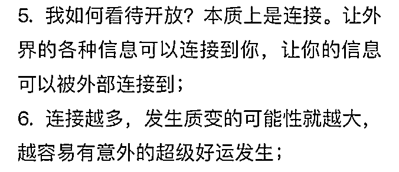
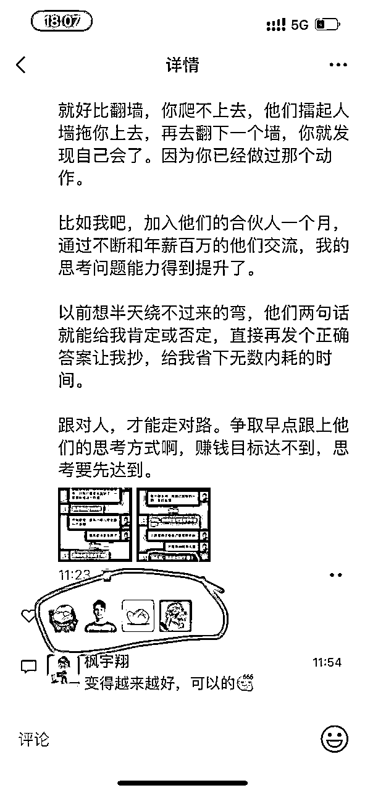

来源：https://f5ltxiww0x.feishu.cn/docx/PYJadxwNCopFiex5YlYcDVtonZc
大家好，我是绚彩飞舞，也是一名在职的设计师，还是一名大龄职场二孩宝妈。取得的成绩也并不瞩目，比起各位大佬月入几万十几万，我的成绩不值一提。
但泡在生财的这段时间，我很清楚的知道，有很多和曾经的我一样迷茫、困惑、找不到方向的生财新人。所以我鼓起勇气来分享，希望能帮助他们早日找到自己擅长的副业，实现想要的目标。
给生财新人一点忠告：
1、一定要去尝试，哪怕项目跑不出来，哪怕只能0到0.1，至少做过后，你会发现自己卡在哪里，如果不去做，连发现问题的机会都没有。
2、尝试过后，可以选择一个最适合自己的，不会做着厌烦的项目。
3、及时找出自己的缺点和强项，在下一次的项目中补上这个窟窿，可以通过链接，可以通过自己投入更多的时间和精力。
4、啥时候该放弃？
在你认识到项目不适合你，你也没有兴趣的时候。每一次的项目，都是认识自己的过程。
我之前为啥不想做爆文了，因为爆文需要一直在写大众喜欢的故事，不管这个故事你是否喜欢，能赚到钱是最主要的。所以需要挖掘爆款的能力，分析数据的能力。这种项目不适合比较感性的我，所以知难而退。
还有非常重要的就是：
积极破圈，付费破圈。因为真正有价值的好信息只会存在于小圈子，而且不会被传播出去。再就是，提高执行力，用积极的心态去做事。如果你已经花钱买来了别人的经验，不要浪费，积极配合，去做，去尝试。
我的身边人都不支持我向外破圈，但是我却在这件事上获得了实在的好处。通过不断破圈，最终找到了适合自己的高端游项目，找到了自己的内容输出平台。切实获得了成就感，也变得更自信。一切都是刚开始。
如果你也在迷茫，请看看我的故事吧。
亦仁曾说，一个人的破圈，就是从花了一笔不敢花的钱开始的。不借助外力，她就会处于一个平衡圈，这个圈子里的一切都是和自己的认知相匹配，匹配的穷，匹配的富，穷的稳定，富的稳定。直到有一天，她战战兢兢的花了一笔让自己痛心的钱，然后碰巧运气好，就会进入到一个全新的圈子，看到不一样的世界。
我很幸运，通过生财有术，我看到了这个不一样的世界。
我是去年5月30号加入生财有术的，到现在还不满一年。
在这里，我通过持续学习，加上链接大佬，找到了自己喜欢的实战项目和平台，并发现了最适合自己的输出方式——发朋友圈。不要觉得这件事很小，因为有实战项目的加持，这件小事价值巨大。比如可以沉淀高价值的用户，通过朋友圈持续触达，持续成交。这件事，既能扩大影响力又可以持续赚钱。
如果你是刚进生财的新人，没跑通过什么项目，不知道自己的天赋在哪里，对生财各种精华贴手足无措，不知道怎样开始。又或者尝试了各种项目，总是败在坚持上，又或者做过很多项目，但是一直找不到自己想要做下去的那个，我的这篇帖子也许适合你。如果不是，大佬还请绕路，哈哈😄
说下情况，我就是一个普通的农民家孩子，家庭并不富裕，家里也没有什么人脉关系。在18岁上大学以前，我的眼界就局限于老师和同学，连外边的世界什么样，都有哪些行业和工作，都是怎么赚钱的一概不知。那会儿每天就知道死学书本，连课外补习班也没有。好在我比较勤奋，最后幸运的挤到了大学。
大学之前我一直感觉良好，但是后来我才知道，人的认知真的能决定命运的。
说个小插曲，一起上高中的同一个镇的女孩子，因为见识广，高考没考好直接复读了一年进了985，后来大学毕业随男友远赴美国，男友那会儿已经是哈佛博士，她也跟着定居。
这件事给我冲击挺大的，我就在想，她要是没复读，直接进了专科，还能有这样的机会吗？可见见识广是多么多么多么的重要！！！我要是有人提点，早点知道学历高可以接触高级圈子，我也选择复读啊。
可现实就是那么残酷！说说我学生生涯仅有的两次实习吧。
第一次是在高中，去我妈服装厂给人剪线毛，工资几块钱。当时车间主任都用异样的眼光看我，我还不知道为啥，最后才知道人家闺女都是进大企业实习的，我真是好搞笑。
第二次是在大学期间，通过熟人介绍找了个不要资历的工作，也是看起来最稳妥的工作，因为人家说了一天一结算。我们一串人（很形象的词，脑补一下），去拿着传单溜大街，当人肉广告，嘴里还要喊着广告口号。当时好像是每人每天7块钱。我的大学业余时间就是这么不值钱😂。其实我的同班同学，都是直接去工作室打工的，我不敢，因为我觉得自己没有尝试过什么，学东西又慢，肯定会被嫌弃。所以说要多尝试，只有试过才能有自信心。
我的职业萌芽从大学毕业都没开始，一直到参加工作。
看看现在的孩子，打开手机和电脑就可以听张雪峰讲择校，讲职业规划，我觉得他们太幸福了！我大学那会儿，张雪峰还在当程序员写博客。
大学四年，我唯一要感谢的，可能就是有个本科学历了。我本身就是没眼界，学习能力不强，靠着有北京户口，误打误撞进的本科，注定和其他人存在差距。起点毕竟太低。
所以你看，圈子，认知，真的能改变人生轨迹的。我大学毕业前就因为认知不够，错过了好多好多可以翻盘的机会。
我的本科专业是工业设计系，但是我在设计上并没有什么特长，素描，色彩，构成，理论都没有基础，从小就没培养过。家里父母没这方面意识，再加上她们也没有钱。我连大学学费都是我妈找人借的。
设计专业费钱，我为啥要报？
还是因为无知。高中班主任让我们填志愿，我看哪个都不懂，家里也没有熟人可以问（亲戚普遍学历较低），也没有互联网。我就只能凭字面意思感觉，最后我觉得设计好高大上呀，而且有一点点喜欢，就报了这个。
去了后我发现自己和同学差了很远。同学要不就是学霸（满分720考630），学习能力强，人缘又好，只是不小心被调剂过来的；要不就是从小学美术，有底子，有天赋，对设计行业有梦想；要不就是家里开厂的，只是需要他们来镀个金，回去就当厂长。我的原因就是，踩了狗屎运，靠着北京户口报名成功了！不然我的分数卡着及格线，很可能上不了本科。
四年很快就过去，我除了跟上下铺的姐妹搞好了关系，其他啥也没有。
甚至英语四级都没过，但是我明明很努力，每天都把全部时间拿来背单词，买了全部的辅导资料。
别人玩儿我在学，别人实习我也在学。我尝试了所有的机会，就连毕业前一个月我还报名了四级考试。我的同班同学，那会儿都六级了，我还跟别的低年级孩子进一个考场。最后还是不行，每次差一两分过不了关。
最后校园招聘我都没法参加。好点的公司，人家都要求四六级英语证书，我只有一个毕业证。
也没有老师帮着我在大学整点奖项。那会儿我们班有会搞关系的同学，每天都追着老师各种捧，让老师给他们资源，给他们项目机会，毕业拿着各种奖项直接进大公司。 我就没有这方面意识。
那会儿快毕业有就业辅导，不过就是走个形式，有资源的用不着这个，没资源的该咋样还咋样。我毕业很久都找不到工作。
总结就是，大学的圈子我也没混好。不懂借助资源和人脉来帮自己，闷头做，不进入别人的圈子。
我是怎么走入职场的呢？
有句话说的好，只要在风口，猪也能飞上天。只不过我这只猪怎么都飞不起来。
刚毕业那会儿，房地产很火，周边的小门脸都是做装修的，这里的室内设计师不要求资历。为了吃饭，为了在亲戚朋友面前不至于尴尬，也为了积累工作经验，我第一份工作就选了室内设计师。
但是因为都是小作坊，这些公司干不到一年就倒闭。
我也跟着换过好几家。他们从来也不签合同，我每月直接工资现金到手，一月一结。也就一两千块钱，拿到手里看着挺多，一张张存起来舍不得花。
要说有进步吗？有一点的。不过由于种种客观原因，做了很久，我也没积累太多实战经验。我当时根本不知道怎么让自己提升。我有破圈的想法了，但是我找不到人。所以我每天都把目光盯在那点工资上。对不断换工作特别无奈。
因为能力不突出，北京大的工业设计工作室自然不要我。好点的装修公司也想要经验丰富的人。
我那时经常会出现一两个月的过渡期，其实就是没工作的时期。然后每次找到一个新工作，就想着这家公司不要倒闭，每天所有业余时间，都用来刷招聘网，还只敢看那种不要资历的工作。
我每天还安慰自己，所有年轻人毕业都这样，但是近些年看到很多大佬分享早期经历，他们在学校的时候就已经开始创业了，至少知道接下来的路怎么走。哪怕换工作，也是有计划有目的的换。没有像我这样被各种小公司抛来抛去的。要是早点链接到这样的人，我会少走好多年弯路，想想知道破圈的重要性了吧。
第二个阶段开始。
后来室内设计行业不行了，招聘的很少，我也不知道是怎么了，现在想想可能就是因为北京房地产增速变缓了，或者要求经验丰富的设计师了。
那会儿也没想过其他的，我要吃饭呀，别的工作又找不到，我就只能找那种不要经验的。每天我就疯狂刷招聘信息，后来还真找到了一个，是高端家居销售的工作（又是不要工作经验的）。
那家公司是soho潘石屹的员工开的公司。其实就是皮包公司，挂羊头卖狗肉。拿北京十里河售价几百的破家具包装一下，卖给山西煤老板们，创业公司老总们。随便一个小凳子售价都在2万元起，配置一套泛海国际一百多平的房子，最起码也要几百万，够普通人家买套房子了。
那会儿的老板pua我们，说你们现在服务这些有钱人，会是你们一辈子的财富。说的话让每个人都感觉打了鸡血。即使不出单，我们也是疯狂打电话。
我那会儿也是年轻，就看中这个有提成，不要经验了。天天坐办公室打电话，骚扰煤老板和那些创业公司老总，以为这就是销售。没电话可打的时候，领导教我们自己编电话打，就是这么疯狂。
记得当时有个上海小姑娘，本来是厂里的流水线工人，因为能说会道，卖了上百万家具，提成20万。直接买了一辆车。所有人都眼红，甚至开始有人睡在公司，过年也不回家，只为了出单。但是不赚钱的人远远大于赚钱的人，大部分人是去当炮灰的。只要不出单每个月还扣钱，本来底薪就800，扣完钱等于白干。
这还不算，后来煤老板开始发现家具质量不好，开始投诉，开始打电话骂我们。我们自知这个工作没法再做，好多像我一样的人就开始卷铺盖跑路。因为当时没签过合同，走了都没人管。
其实这家公司虽然赚的少，但是我感觉是我离钱最近的一次。
有资源：那些家居虽然简陋，但是成本低，利润高。
有客户：那些板们，虽然都是我们打电话骚扰出来的，但是却实力都非常强。哪个都是年薪百万以上的，不然也买不了豪宅，开不了豪车。
缺的是啥？
认知。
1、我根本没有意识到，要把那些客户的信息留存起来，维护好他们。
2、我没有给他们推销别的产品的意识。
3、我不懂维护客户的技巧。
如果当时有生财有术这样的圈子在，我学个一两招，能开不了单吗？可是没有如果。
因为没有破圈，我就在稳定的穷，稳定的富。最后，回归平静。
接着又是投简历，刷网站，找工作。
毕业大概3年后，2011年左右，我入职了一家贸易公司，正式开始签合同了。我也非常珍惜这次的机会，想着一定要在公司发挥出自己的价值。
那家是做餐具出口的，公司氛围很好，就是属于很正常的那种公司，我也觉得非常稳定，内心别提多高兴了。
我在里边做平面设计，其实每天拿着小勺小叉子放在摄影棚拍照，然后再传到电脑上用软件绘图。跟我专业相关，但是不大。
本来我很喜欢这个工作，因为内容我能胜任，而且我也喜欢探索学习。但是我非常努力工作，还是换来天天被公司行政大姐pua，大家说我要多替公司着想，多干点活儿，用北京话说就是：要有眼力见儿！
可是我的性格就不擅长这个，不过我除了做好自己本职的，也尽量按她说的做。比如给领导端茶倒水，擦桌子。那会儿几个同事，大部分都是毕业就去了那儿上班，每天都抢着给领导擦桌子。
我就这样在这家公司做了近3年，算是非常稳定了。工资不高，但是我很满意。
不过好景不长，后来因为国际贸易市场不好，订单锐减，好多国外客户都跑单了。可是老板还用以前国企的那种做派，等着顾客上门，不愿意开拓市场，不愿意变通，每天坐吃山空。很快就发不出工资来。
而我只是一个公司里的小透明，说不上话，空有帮公司挽回局面的心，也使不上劲儿，最后只能看着它倒闭。最后也没积累下来实际的经验。
这家公司我最感慨的就是那个憨头憨脑的老板了，其实氛围很好的公司，员工也要求不高，都死心塌地的。为啥还能做成那个样子？
但凡他积极破圈，多联络别人都是怎么创业的，多争取一些资源，也不至于最后倒闭。
所以我就佩服，能来生财有术链接人脉的大老板，注定了会飞黄腾达。
不过天下的老板不是都这样的。
大概在2014年，我生完我家老大，正好赶上UI设计需求爆发。我老公的软件公司招人，部门领导破格将我这个经验为0的人招去了，还给我要来了一个不错的薪水。
当时一个月是8000块，我上家公司还不到4000，所以我非常满意。当时部门领导说：你要好好学，争取在公司能留下来，如果你不努力可能自己都想走了。事实是，我踏踏实实的在这里待了6年，就为了能留下来。哪怕技能达不到，我也没想过走，我就觉得是自己不努力。
工作6年都没涨过一分钱。
开始我觉得事情非常合理，毕竟自己能力不够，需要学习。都说在做中学是最快的，我也争取更多的项目机会，招我进来的部分领导也故意会让我承担一些重要设计工作，但是我拼尽全力，也学不到设计的皮毛。后来我才知道，带我的人如果是程序员，我是学不到设计的东西的。
然后这么长的时间，我每个项目都搞砸。不仅没机会升职加薪，还被大老总盯上，让我调部门，说我占用资源。
那几年真的挺尴尬，每天一想到要上班我都浑身哆嗦，每天都生活在恐惧中，生怕哪天工资都不给我发了。但是因为知道自己是0经验进的公司，也没有太强的学习能力，就觉得大老总给我的所有气我都受着，我拿人家工资了，我没达到要求就应该给人家打工，这一切都是应该的。这个想法导致我后来能力提升了也不敢提加工资，就觉得自己在赎罪。
然后在公司我一直被边缘化，甚至在这个最亲近的团队里，眼看着所有人都有机会升职加薪，我老公在部门经理带领下也混的如鱼得水，工资一点点增加，我就只能保住个温饱，我觉得自己真的好差。尤其时不时被大老总点名让我走，别的团队又像嫌弃我一样不接收我，我每天自卑的就想哭一场。
而且我这个人从小就是顶着巨大压力的，小时候被老妈拿来和其他孩子比较，指着我说我性格怎样怎样，我也不敢反抗，还要说她对。长大了我又在工作上常年不得志，被大领导点名，压力每天都在数倍增加。
那会儿不知道去哪里找老师。刚进公司的时候有个设计在的，后来人家跳槽了。我就自己去优设网自学，只是我的学习能力实在差，好多都不怎么会，每天看的最多的也就是认知贴。进步缓慢。
我的压力这么大，我老公的开解方法是：你挣这些我很满意了，我不需要你挣钱，我挣钱就好。
这就像是宣告我必死无疑一样，反正我也没救了，指望不上。他的这种开导方法，只会让我压力进一步增加，可是他却认为这是最好的方式。
那指望他的结果如何呢？如果真是如他所说，倒是也没啥。
可是在我爸生病需要住院的时候，我妈眼睛要做手术的时候，我们全家都要求他。看到我爸妈巴结他的眼神，小心翼翼的动作，我真的恨自己没能力！如果我多挣点钱，他们用这样吗？我从小到大几十年，他们从来都没有跟我这么小心翼翼说话过。
尽管最后我老公非常不情愿的掏了钱，事后总是一遍又一遍的提醒我，去让你爸妈查一下怎么报销，不是有医保吗？为什么花那么贵？（这里补充个小知识，农村新农合一年最高报销上限是3000元，我爸妈做手术都花了一两万）
除了我老公的不情愿，我婆婆甚至表情严肃的对我说：你妹妹掏了多少钱，钱怎么都让你花（她的意思是让我儿子花）？可是我妹我一个月才2000块工资，根本花不起这个钱。我的妹夫也是只管自己的人，他才不愿意照顾我爸妈。
就是因为我老公的孝顺，我爸妈常年对他感恩戴德，逢人就夸他是好女婿。可是就因为我老公出了钱，我们全家都要巴结他，这个他们怎么就不说呢？
而且我给我妈点零花钱，他都要查我微信，还跟他妈汇报，说我又转了多少多少。这一切的一切，都是因为我没有钱，尽管我挣着工资，和在家不上班伸手要钱的家庭主妇有什么区别呢？
也许有人会说，你把工资藏起来一部分呢？因为我之前和我老公一个公司，他会登陆我的账号，看我工资发了多少，这就是亲密无间（随时监控）。
以上种种原因，导致我对挣钱充满了渴望。我觉得自己的钱多一点，也许就能藏一些了。
总结，钱虽然不是万能的，但是钱可以让你在家里有尊严。不过我当时并不知道如何搞到钱。
2016年开始，知识付费盛行。受到大环境的启发，为了实现收入翻倍，我开始持续报课。
先后付费过的课程有：手绘卡通类，插画类，UI设计类，哪一个都是和专业相关，也和自己的主业越来越相关。我的工作能力也确实有了提升。
但是并没有实现传说中的薪资增长。原因是，学到的东西，项目中能用的非常少。就好比我的工作只要求会画线，教的知识让我怎么做包装。哪怕这些东西放在市场上价值很大。这家传统企业也暂时用不到。
不过通过不断付费，我的作图能力和审美提高了。工作中效率也高了不少。虽然工作依旧，但是得到了客户的赞扬，跟我刚入行那会儿截然相反的赞扬。甚至有行里客户私下跟我说，让我尽快跳槽，或者告诉我怎么跟行里提涨工资，因为她觉得我值得。
上边说的几个课程，一个比一个贵。价格分别是2000元，5000元，7000元。我虽然拿着工资，但是每月剩下的很少，因为我在还贷，我老公的说要存起来。
报那些课我是非常心疼的，要不是足够痛，我才不会舍得投入。大家也许都有同感吧。
通过一次次付费，我却收获了技能，收获了认知，虽然认知部分不多。我也有望打破我的小圈子，事情出现了一点好苗头。
虽然工作上我胜任了，可是我怎么都做不出作品集。对，设计是要求有作品集的。虽然我报的UI课就是教基础加作品集，但是要有自己的项目，完整项目。我都没接触过，我也比较笨，编都编不出来。最后跳槽没成功。
话说之前有一次在食堂吃饭，我看到有个人特别热情的和我招手，我当时也不认识，就是回应他了一下。他说，他好像哪里见过我，哈哈。我当时特别佩服他和陌生人说话的勇气。后来这个人，跟我进入了同一个项目组，我们才互加了微信，彼此了解。
再后来，这个人通过人脉关系，换到了别的公司。我也通过他的关系，进入了这家公司。实现了甲方内部转场（换公司），实现了薪资翻倍。
和项目经理见面的时候，人家态度非常好，直接问我想要多少，连我的作品都没看，薪资翻了一倍多。
从那时我就明白了，技能虽然很重要，但是酒香也怕巷子深，既要踏实肯干，也要积极破圈，积极链接别人。人脉和信息差才可以让你走的更远。
这个帮我打探消息的朋友，最后获得公司内部推荐金5000元，看，他做了什么？让自己成为信息的中心，才能交到超级好运！
（以上截图来自傅超人的分享）
虽然转岗成功，但是我知道自己的主业天花板就在那儿了。不可能有再大的上升空间。因为这里不需要高技能，也不需要高职位。我向外跳槽的路也被堵死了，为了不再被现在的公司淘汰，为了再给自己留条后路，我只好把目光转向副业。
调岗成功后的第一件事，就是加入生财有术。但是受到身边人的阻挠。
（以上截图来自傅超人的分享）
当时因为我身边所有人都是传统行业的，尤其我老公，是属于拿高工资的那类程序员。他们都觉得把主业做精做大才是正途，我以前花钱报设计课他还支持，花钱进入赚钱的圈子，他说我误入传销，每天都警告我不要被洗脑，不要投钱。他还说，所有的信息，都可以从网上免费获取到。
开始我在闲鱼等各种平台接触到了一些课程，比如当时有闲鱼无货源电商，确实很便宜，几块钱，但是加入群后，里边老师头两节课讲点干货，后边直接推高价课引流，要不然就不解释。花了个钱，学了个寂寞。
后来我知道，真正有价值的好信息，只会存在于小圈子，而且不会被传播出去。
（以上截图来自傅超人的分享）
我天生的居安思危意识开始起作用了，我以前所有的失败教训开始迫使我做出选择。我拿着卡上仅有的2000元现金，再加上微信的几百块零钱，狠狠心报了生财有术社群。我至今仍在感谢自己当时的决定！
亦仁老大说：一个人的破圈，往往从花了之前自己不敢花的钱开始。我100个赞同。进入生财的圈子，我才发现自己并不孤单，终于找到了同类。

当然，之所以有这个底气报名，也是因为之前转岗成功，工资翻倍，不会再为没钱要钱发愁。再加上之前的工资卡里正好有一笔我老公查不到的钱。
可是我这么小心翼翼，还是引来了家庭矛盾。
某天，老公翻我手机（对，我的手机密码他也要知道），发现了我在参加社群，吃饭时当着公婆面问我在搞什么？警告我不要投钱，不要进传销，不要被洗脑。我公婆也随声附和，说他们村里的谁谁谁投了几十万，最后血本无归。他们几双眼睛齐刷刷盯着我，好像我的一个表情不对，他们就要把我吃了。
我想向他们解释我做的事，但是我发现根本解释不清，因为我不知道怎样解释能告诉他们我是在创业，他们的传统脑瓜子根本理解不了。
而且之前发生过一件事，让我现在想想都后怕。
之前有一次，我关注育儿公众号，最后在号主推荐下给我闺女买了一个蓝牙耳机，也不贵，300多。我本来是想让女儿学英语用的。
然后我老公知道了，说耳机对孩子耳朵不好，我解释说孩子专用的，进口的，特别安全。他不听，只说：我让你退了，你听到没有？我坚持认为自己是对的，也没搭理。
然后，他就掐我脖子，一边掐我一边说我没有听他的话，可能就是因为他认为我在花他的钱，哪怕我说花的是我自己的。
从那以后，我一想起不听他的话花了什么钱，我就觉得忤逆了他，明明应该是平等关系，最后就是因为钱，他对我有了支配权。钱能带来尊严，能带来权利，钱能给人自由，我算是知道了。
搞钱，想尽一切办法搞钱，为了不再受压迫。我觉得生财能治好我的心病，所以我每天都在疯狂刷帖子。
开始进生财刷的都是认知贴，各种不要怕短时间赚不到钱，要看长远。
我也感觉这些对新人很友好，我开始的一两个星期，基本都在刷这样的帖子。可是我又极其渴望赚钱。
后来，我在哪里看到说新人应该多刷精华贴，提高赚钱认知。我又疯狂刷精华贴。我看的很慢，因为好多好多都看不懂。但是我从没有想过放弃。
因为我知道，现在自己处于信息风暴中，在不停的输入，总有一天这些会产生巨大价值。
亦仁说过，大规模交换的前提是大规模的连接，之后才产生交易的可能。所以要让外部信息和自己连接上。
我刷的精华贴，大部分都是“有手就行”“保姆级”这样的字眼的，因为我觉得自己能力不行，只能看那样的精华贴。而且这样的帖子一定能让我赚钱，如果不行就是自己不行，怪不得项目（看，认知又在作怪了）。
不过刷到了我也没有开始做。这个时候我的执行力基本为零。
记得有一次看到一个风向标，讲小红书如何帮助别人禁言，就这个小需求都可以赚钱，而且说是小白也能上手。https://wx.zsxq.com/dweb2/index/topic_detail/214488415582581。
但是就这么个项目，我看不懂，也没有动手做。后来看到别人竟然真的赚到了钱，而且很容易。
可是我没有做，所以没赚到钱。
不过事后反思一下，当时第一眼看到确实觉得可以做，但是一些细节看不懂，不敢加人家问，再加上评论区已经有很多有经验的在问了，也要下场了，我能有啥机会呀，然后我就放弃了。
怕这个，怕那个，是不是新人的通病，哈哈。还没开始就在各种幻想困难了。
就这么看了不做，各种看，各种焦虑，没有办法，只能找心理按摩的帖子看看了。当时看了很多郭晓文老师的帖子，包括跑到他公众号上看，焦虑一下子就没了，真的太管用了。积极找大佬连接，哪怕只获得认知上的提升，也知道自己认知和执行力到底有啥问题。
我通过晓文老师，知道了新人会遇到的各种项目阶段，了解了一个项目都会以何种面貌开始。比如有蛮荒期，有开采期，有精细化运营期（名字和晓文老师的不一样，建议看他原文）。然后我的心态好转了很多！再也不是自卑，自暴自弃的阶段，我对自己做项目又充满了信心。
我就这样每天给自己加油打气。但是因为没做过，不会，不敢，还是一次又一次错过下场的机会。
比如，在看精华贴的时候，我也想尝试来着，好多项目都被我从0做到了0.1，比如小红书运营，我注册了账号，闲鱼二手书，我注册了账号。然后就没下文了。
我这个阶段需要的是啥呢？全方位认知提高了一点，但是我需要执行力！
因为好多经验都是实践学来的。而且每个人需要的不一样。有的人觉得好简单的，对于自己可能就是个大困难！所以一定要下场做！
看了很久精华贴，除了觉得大佬牛逼，什么都不会。后来发现有人说航海可以让我们这些小白获得历练。我心想，哈哈，终于能有人带了！
我就等啊等，大概9月份，我终于盼来了航海。
我对比了上次航海，也看了当时的精华贴，大家对快团团讨论的比较多。于是我就报了快团团，因为我很久之前在小红书上就认识了快团团的教练小野，知道她做的很好。
但是一入场我就懵了。
这里说一下，因为当时没有在生财认识很多人，也没有啥小道消息，自己了解的比较片面。没有对快团团的需要技能做全面了解。也不敢问，也不知道问谁。
超人说，圈子会像滚雪球一样不断升级，真的是这样！我因为在生财发过风向标，所以进了风向标的微信群。大家每天都在那里讨论行业动向，航海前也会有人各种分析和拆解，还有鱼丸不定时给发的分析内测项目的机会，大家快去发风向标！！！！
我还没得到过内测项目的机会，因为我还不具备拆解能力，我要加油啦！
说回正题！
在快团团航海，我发现，我没有流量，不会发圈，再努力都赚不到钱。虽然我也报了小红书运营，但是我根本不知道小红书上去卖啥。
教练说可以把快团团的品放小红书，我放了，可是品太少了，都不够支撑我发笔记。做混剪视频，做开箱好物视频我也不会。我也不愿意去花钱买一个我不需要的品，就为了拍视频用。所以第一次航海两个项目我都失败了。
航海一年也就是两三次，每次才21天，剩下时间我要怎么持续努力？我又陷入了迷茫。
我知道，自己需要更升级的小圈子，可是我完全不知道怎么做（当时还没进风向标群）。
我终于动手了！！！自己动手了！！！
有问题就有答案。我仔细分析航海的总结，发现了一个特别适合新人的项目：公众号爆文。
于是我自己动手，对照航海手册，又把这个项目从0做到了0.1，开通了3个公众号，把我自己绑定为运营者，在tb开通了流量主。爆文项目也正式启动了，但是我不知道爆文应该怎么写。
我记得当时做这一系列工作，用时一个星期。因为我真的什么都不会，航海手册看的也慢，到处都是新知识。
虽然开始很困难，但是只要迈出第一步，就成功了一大半。
亦仁也说过，想要赚钱，就先下场把手弄脏（原话截图没找到）。
生财圈子真是卧虎藏龙，我很感激自己进入到一个满是大佬的圈子，有机会像滚雪球一样，升级自己的圈子。
保持自己与外部的连接，让高价值信息和自己连接起来！！
我经常关注生财有术的视频号直播。虽然晚上那个点，我在家哄孩子，但是我就戴上蓝牙耳机，把手机放的远一点，假装陪他玩儿。耳机小，头发一盖也看不见。只是家人可能奇怪我为啥回答问题木木的，哈哈。
有时候直播的很晚，我哄孩子睡着了耳机还塞在耳朵里，早晨才想起来。
一次偶然听的直播，我注意到生财直播间请到了枫宇翔。我很好奇他是怎么稳定靠爆文月入6000的，其实哪怕他说稳定月入600我都愿意听。
他有句话说的挺好，大佬可能不好对标，但是因为他比我们多走了几步，正好可以对标。我觉得他说的太对了，马上他一下播我就链接他。
谁知道，就是这么一个链接，我遇到了副业路上的第一个贵人。
主动去接收更多有效信息，是副业之路的第一步。如果说生财让我看到了副业大海，宇翔就是带我走进了副业的大门。
宇翔的小报童我第一时间就买了，也加入了他的群，在里边解决了我大部分的疑惑。我的爆文项目也开展了起来。
宇翔特别爱在群里分享他的观点和认知，除了那些他暂时保密的项目，其他方面帮了我们非常多。感谢他让我真正走出了副业的第一步。
再次印证了那句话，真正有价值的好信息，只会存在于小圈子，而且不会被传播出去。
后来我在宇翔群里认识了前端队长，因为他一直在分享干货知识，分享自己做爆文的技巧，我就主动链接了他。通过跟队长，我又认识了老徐，入了他的副业星球，里边有各种各样的低成本创业小项目，非常适合新人尝试。
在不知道自己擅长什么的时候，就去主动连接。让外界的各种信息可以连接到你，让你的信息可以被外界连接到。
我在老徐的小项目中，有机会通过低成本付费，做了各种小项目尝试。
第一个做的是红包封面。这个在生财里看到过晓文老师的帖子，但是不会做，也没资源。老徐这里直接把后端资源和玩法全都给好了，还配了教练和群。我也很快就上手做了起来。开店，分销，最后一星期不到我就出了一单。
第二个是爆文，虽然和宇翔的重复了，但是我想了解不同人的玩法，毕竟成本很低。不过这个爆文最后我也没做大，后边我说原因。
剩下的，还有小红书引流，口播，闲鱼，朋友圈运营等。
小红书引流我发现大家都有产品，有目的引流，只有我定位都搞不清，所以失败。
口播我简单了解了玩法，也不知道说啥，没有定位，也不敢说，又没有开始。
闲鱼我放了几个商品上去，但是没有持续学习持续做，加上爆文项目和别的事抽不开时间，我也没有继续做。主要是光有曝光没有浏览，不知道咋回事。我当时放的是小项目海报和红包封面。
朋友圈运营这个课我认真学习了玩法，但是不知道发啥，也不想随便发生活或者乱七八糟的，也没有想好，没有开始。
最终就是，一个月之内，我尝试了6个项目，有了解玩法的，有失败的，也有跑通闭环的。当然，哪个投入进去都可以赚很多，但是过程对我才是最重要的。我了解了自己的能力和兴趣，也知道了自己的不足。
更重要的是，我终于不再是0到0.1，我终于做到1了！
这个跑通闭环的自信心，可以帮助我应对剩下的所有项目。
我知道了做一个完整项目需要什么，第一：玩法 ；第二：资源 ；第三：对标；第四：模仿。
现在还记得红包封面有第一个订单时，爆文流量主收到第一笔收入时，我内心的那个激动。
这是我除了主业和兼职外，赚到的第一块钱。虽然不多，就几块。比如我之前做设计单子一个单就几千，这个简直微不足道。但是这个可持续。把一份时间出卖给一个人，和把一份时间出卖给无数人，是不一样的。
我也通过这些尝试，更加了解了自己。
我的优势和兴趣就在于，我喜欢做小红书。红包封面我就是发在了小红书上。虽然小红书很卷，群里好多人也说不好出单，但是我找了几个封面发上去，立刻就有点赞评论的。我还往微信引流了2个人，成交了3单。哈哈。
我的弱势就是，没有自己的项目。引流，口播，朋友圈，哪怕闲鱼，都是渠道的玩法，我没有自己的项目，总感觉没有根基。没有安全感。
虽然好多人都靠分销赚钱，但是我不喜欢空手套白狼，我喜欢有自己的事业。可能跟我长期做设计有关吧。
我学习能力的不足就是，我不善于搜索，不善于举一反三，不善于提问。就是大佬成才必备的基础技能我都没有。
比如在做公众号爆文时，虽然我加了宇翔，前端队长，张老板等几个大佬微信，而且两个sop文档让我学，两个学习群伺候着，但是我还是没做出大的成绩。
大概爆文做了2个月后，一直不爆，我就私下去问张老板，还截图让他帮我看，最后发现，我错误的理解了热点文的意思。就是这个认知不清晰，让我在错误的道路上走了2个月，每天花费时间3个小时在这上面，一直不出成绩长达2个月。
眼看着后加入的伙伴一星期就出爆文，几百块很快就到手，我觉得自己需要有人教，太需要了。不仅是项目经验，思路，思维，想法，随时都需要有人给我掰正。
而且我已经不再年轻了。刚毕业那几年，想付费没有找到出路。现在好不容易进入了一个正确的圈子，我一定要抓住机会。对我来说，时间比金子都宝贵！！
通过之前做小项目，我了解到了自己的弱点，也知道了自己需要哪方面帮助，我就准备着，有哪些机会我可以链接到愿意帮我的人。
连接越多，发生质变的可能性就越大，越容易有意外的超级好运发生。
这一天很快就到了。
枫宇翔真的是我今年初的第一个贵人（我对贵人的定义是，他的建议能给我带来帮助，不是免费帮我）
宇翔有一次在他的爆文群里分享炮爷的小报童，名字起的挺豪华的，叫《百万千万级项目操盘指南》。
如果我自己看到这个名字，我是绝对不会入的，因为我还没到那个级别啊，我有自知之明。但是宇翔用他的诚恳的人格担保，一定要去买这个小报童，一定要想办法加到炮爷微信，甚至我们如果买了加不上，他去帮我们申请。
我记得当时正在公司食堂打饭，心想啥东西啊，能让一个人这么用心的帮他推？炮爷是谁？没听过啊。名字起的还挺牛的呐（我不是一直在翻生财精华，真的没听过，后来才知道炮爷是航海家，我之前只认识黄小刀，哈哈。可见刀姐出现频率多）
小报童买了的第二天，我就巧合的听了炮爷的直播，讲高端旅游赛道。那会儿生财的旅游航海也要开始了，所以我想听听这个领域有啥。
然后，我遇到了第二位贵人——生财小苗哥。
苗哥当时在帮助炮爷直播，讲了高端旅游这个赛道是他们自己跑出来的项目，从头到尾都有非常详细的手把手的教程（满足了我没有自己项目的点）。
他接下来说的，才是最吸引我的，那就是他知道好多新人不是不想开始，也不是想放弃，是遇到问题卡壳没人解答，往往在项目准备阶段，就停留在了注册账号这一步。而且好多宝妈没有那么多时间，也没有人督促，也不知道怎么搜索，也不知道怎么规划自己的副业道路，一个项目就是一个项目，做完就完事了，而他们可以陪着小白0-1。
还有很多很多内容，上面只是简要说了几个。我的意思是，我感觉自己终于找到了适合的了。小的圈子，高级的圈子，可以一直陪我成长的圈子。
而且，傅超人在生财的旅游赛道精华贴被好多圈友熟知，而他就是炮爷的创业合伙人。这样一个自己又有实战经验，又有道路规划的合伙人，我觉得太适合我这个小白了，于是加入了他们。
事实证明，贴身指点让我非常快就发现了自己的优势，行动力爆棚。
再次贴上亦仁的这句话：一个人的破圈，从花了自己之前不敢花的钱开始。

第一天，他们就让我发了目标和卡点，对我的情况量身定制我的成长规划。当时苗哥说：发圈。超人说：跑通高端游的项目。
我啥话没说，就是干！因为我觉得他们了解我，而我也通过之前的项目经历，了解了我自己。
在加入他们第二天，就开始按照他们说的做内容输出，除了旅游项目，主要就是朋友圈。
再说一遍，为啥要做输出？
因为输出才能让你和外部连接。哪些实现财富跃迁的人，无一不重视价值输出。只要输出，才能让你交到超级好运。


我在他们的提示下，迈出了第一步。一开始就收获了陌生人的点赞。
给大家看看我第一次发的圈
之所以有写作思路，除了炮爷和超人他们的提示，和我之前朋友圈那个小项目也有关。
我当时虽然没有行动，但是我了解了写朋友圈的思路和方法，为了后来发圈积累下了经验。
而且，我在爆文项目认识的领队张老板，他的晨间日记，给了我很大的启发。他也在群里或者各种地方无私分享，愿意帮助新人。
还有一点，就是，我买了小可爱老师的小报童。
不过之所以能认识他们，和我自己的努力破圈，主动连接也是分不开的。
积极主动付费破圈，积累项目经验，找到自己的不足，快速连接大佬。执行力，听话照做！
这里又想贴一句话了，大规模的链接，会产生大量的信息交换，从而产生价值，实现变现。千万不要缩在自己的小圈子里，不敢跟外界链接。
我记得，之前认识一个生财圈友，忘了是谁了。他说加入生财一直不敢和大佬说话，不敢链接别人，怕没人理，怕伤自尊。但是我想告诉大家，大佬之所以成为大佬，也是因为不断破圈，不断输出，不断链接过来的不是么？
不然他们怎么被人熟知呢？
上边说了我通过不断学习发现自己发圈比较在行，也大概知道了发圈的意义就是与别人做价值交换。可是这件事这么小，值得做吗？
小可爱老师，通过发圈年入50万。对，就是发朋友圈。她为什么能赚到钱？因为她既主动链接信息，又主动输出信息，让自己处于信息的中心。通过不断的价值交换，她让自己的朋友圈越来越贵。
那我们如果是个人呢？我们如果是做IP呢？我们可以打造一个超级有粘性的朋友圈吗？
把公域用户导到私域，让粉丝在我们的朋友圈就可以看到所有有价值的信息，比如像快团团那样提供粉丝的衣食住行，比如像做知识付费产品那样提供课程分销，我们可以做到吗？
如果可以，那你的粉丝有多贵，就代表你的朋友圈价值有多大。
所以这件事，我觉得没有天花板。
而且可以扩大你的影响力。
关键它还特别适合新人，因为真的非常简单。
我的朋友圈触达到了多少人，实现想要的效果了吗？
先来看一下取得的成果，不仅有炮爷和超人他们的点赞，还收到了晓文哥的点评，超级惊喜和意外。原来大佬也会看小白的朋友圈，所以各位还不快发去来，哈哈。
由于炮爷在群里重点表扬我，也有好多新加的朋友，也来关注我的朋友圈，并给我肯定的鼓励，我感到非常开心。
其实还有很多很久不联系的朋友也发来问候，要跟我学习发圈，这里就不一一截图了。

每个人都会写文案，我为啥确定自己适合做这个呢？
我思考有以下几点：
第一：跟自己的现阶段目标匹配。
我现在啥成绩也没有，谁也不认识我，我就想通过朋友圈现触达自己的私域，建立自己的个人IP
第二：我比别人在这件事上花的时间少。
我在写朋友圈的时候，文案写出来几乎一遍过，很少有磨磨叽叽的时候。经常别人抓耳挠腮一小时，我最多20分钟就能搞定。
第三：成本比别人低，效果比别人好
我选题很快就能确定，而且能保证看的人有收获，觉得接地气。
朋友圈运营是IP运营的重要部分，发好朋友圈，从公域来的粉丝就能保持高粘性。直至成交。
这件事的重要性，靠谱老师，芷蓝老师也强调无数次了，并且已经在践行。
希望大家现在就开始重视起来，做起来。
最后感谢傅超人，苗哥，炮爷给我的悉心指导，感谢老徐团队的各位优秀领队给我的启发，也感谢枫宇翔，前端队长，小翟，张老板，巴尔扎壳，黑胡子等给我的鼓励，还要感谢晓文哥给我这个新人的鼓励，谢谢大家。
祝大家新年顺顺利，心想事成。
感谢大家看到现在。我的起点并不高，而且家人一直阻挠我，但我都没放弃学习，努力破圈和提高自己，最终才找到自己喜欢的高端游项目，加入喜欢的团队，并找到最适合自己的内容输出方式（发圈）。如果你们还没有开始行动，就把我当做对标吧。加油哦！
给生财新人一点忠告：
1、一定要去尝试，哪怕项目跑不出来，哪怕只能0到0.1，至少做过后，你会发现自己卡在哪里，如果不去做，连发现问题的机会都没有。
2、尝试过后，可以选择一个最适合自己的，不会做着厌烦的项目。
3、及时找出自己的缺点和强项，在下一次的项目中补上这个窟窿，可以通过链接，可以通过自己投入更多的时间和精力。
4、啥时候该放弃？
在你认识到项目不适合你，你也没有兴趣的时候。每一次的项目，都是认识自己的过程。
我之前为啥不想做爆文了，因为爆文需要一直在写大众喜欢的故事，不管这个故事你是否喜欢，能赚到钱是最主要的。所以需要挖掘爆款的能力，分析数据的能力。这种项目不适合比较感性的我，所以知难而退。
还有非常重要的就是：
积极破圈，付费破圈。因为真正有价值的好信息只会存在于小圈子，而且不会被传播出去。再就是，提高执行力，用积极的心态去做事。如果你已经花钱买来了别人的经验，不要浪费，积极配合，去做，去尝试。
如果我的分享对你们有帮助，请给我点个赞啊，毕竟纯小白写这种文章好需要勇气，还是在这么多大佬云集的群里。
我也想结识更多志同道合的小伙伴，欢迎大家与我链接交流啊，爱你们❤️